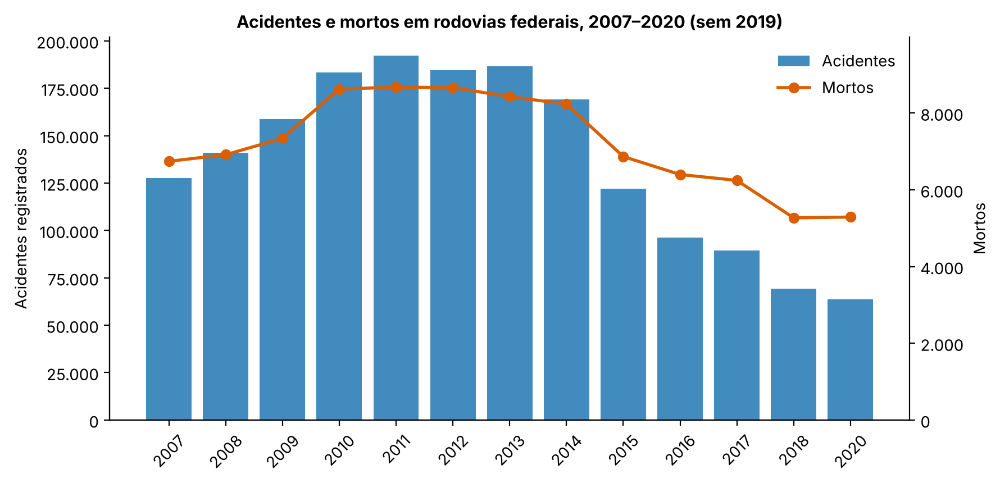
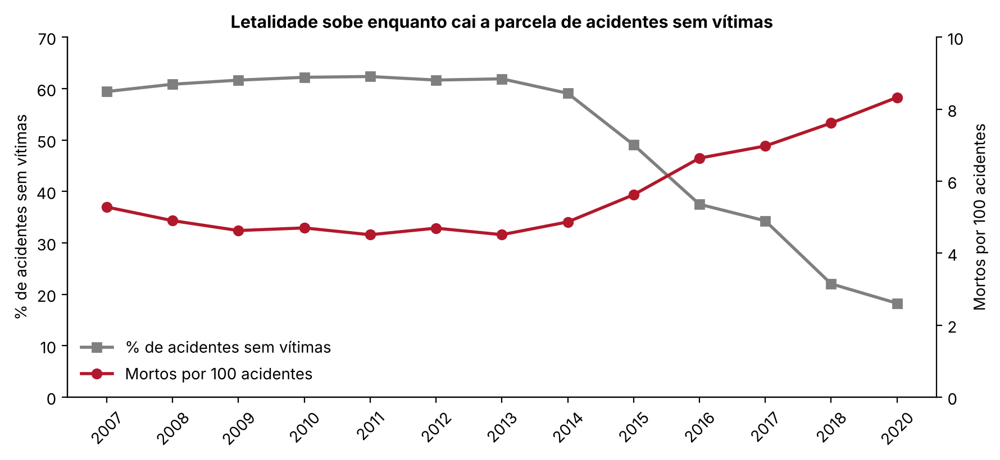
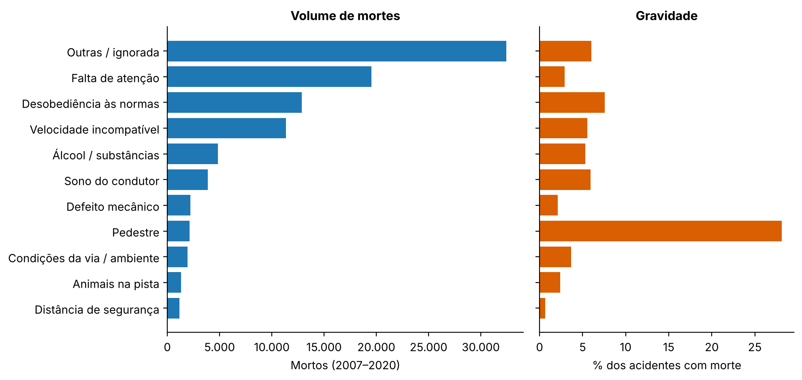
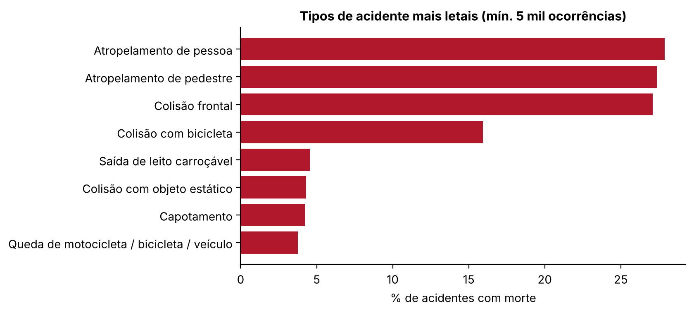
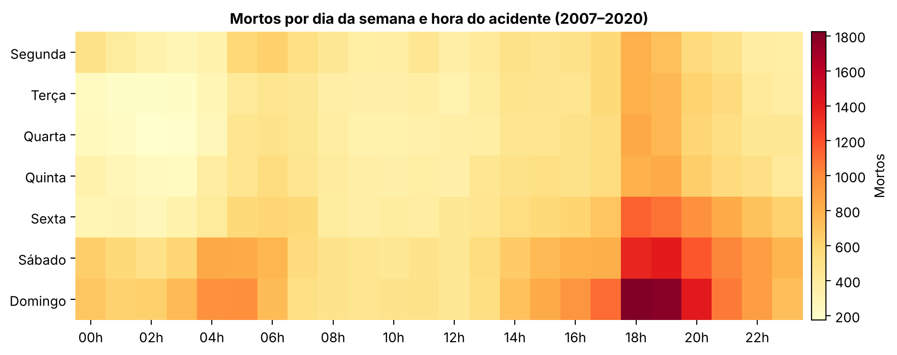
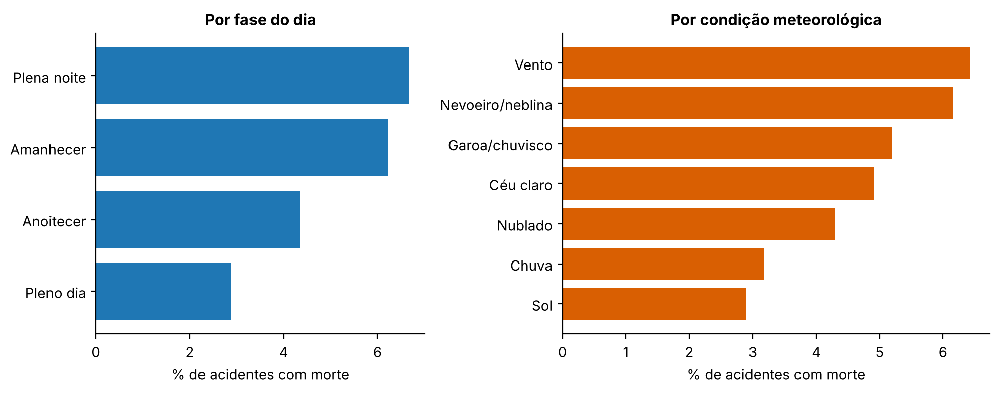
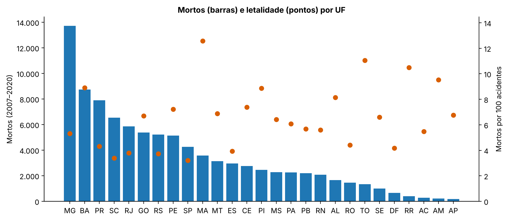
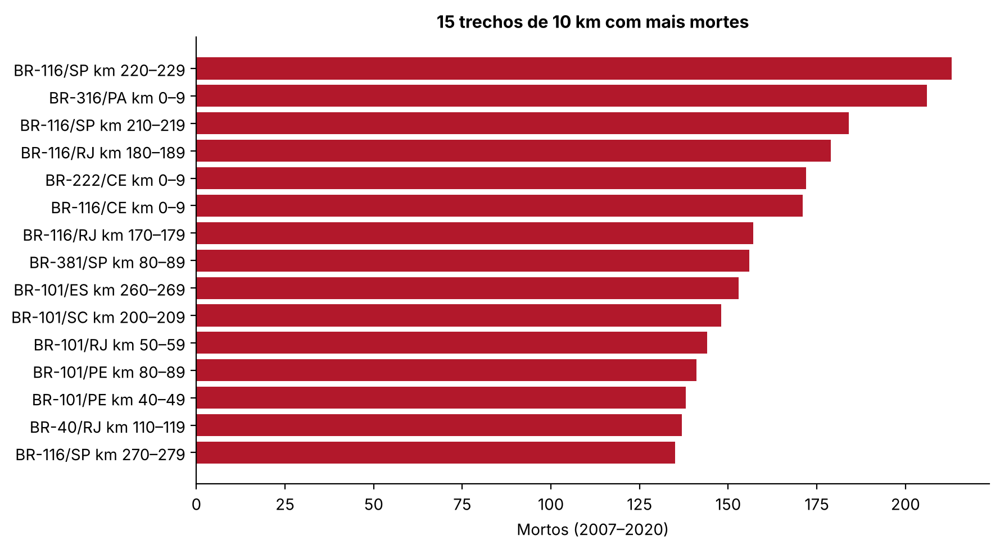

Acidentes em rodovias federais brasileiras (2007–2020): evolução, gravidade e distribuição geográfica das mortes
Resumo
Este estudo analisa 1.784.419 ocorrências registradas pela Polícia Rodoviária Federal (PRF) nas rodovias federais brasileiras entre 2007 e 2020 (a base utilizada não contém 2019). Um pipeline determinístico em Python unifica 13 arquivos anuais com codificações, formatos de data e taxonomias distintas, registrando todos os descartes. Três perguntas orientam a análise: como evoluíram acidentes e mortes, quais fatores se associam à gravidade e onde se concentram os óbitos. O número de acidentes registrados caiu 50,2% entre 2007 e 2020 e o de mortos, 21,6%, enquanto a letalidade passou de 5,3 para 8,3 mortos por 100 acidentes. Em paralelo, a parcela de acidentes sem vítimas caiu de 59% para 18%, indício de que o critério de registro mudou. Acidentes em plena noite têm 2,3 vezes a proporção de casos fatais dos ocorridos em pleno dia, e as noites de fim de semana concentram os picos de mortes. Minas Gerais lidera em mortes absolutas; Maranhão e Tocantins, em letalidade. Discutem-se as limitações dos dados e a necessidade de normalizar por volume de tráfego em trabalhos futuros.
Palavras-chave: acidentes de trânsito; rodovias federais; Polícia Rodoviária Federal; análise exploratória; dados abertos.
1. Introdução
Os acidentes nas rodovias federais geram custo humano e econômico expressivo para o país. A Polícia Rodoviária Federal (PRF) publica, em formato aberto, os registros de cada ocorrência atendida, o que permite estudar séries longas e identificar padrões úteis para fiscalização e políticas de prevenção. Esses registros, porém, foram produzidos por mais de uma década com colunas, categorias e critérios que mudaram ao longo do tempo, e tratá-los como uma série homogênea é um risco metodológico que este trabalho procura explicitar.
O estudo busca responder às seguintes perguntas de pesquisa:
- RQ1. Como evoluíram o número de acidentes, de mortos e a letalidade entre 2007 e 2020, e essa evolução é comparável ao longo do período?
- RQ2. Quais causas, tipos de acidente e condições (hora, dia da semana, fase do dia, clima) se associam à maior gravidade?
- RQ3. Em quais estados e trechos de rodovia se concentram as mortes?
2. Metodologia e pipeline de dados
2.1 Fonte e granularidade
Os dados são os arquivos datatran da PRF, na versão agrupada por ocorrência disponível no Kaggle (equeiroz), cuja origem é o portal de dados abertos da PRF. Cada linha é um acidente, com data, hora, local (UF, BR, km, município), causa, tipo, condições e contagens de pessoas, mortos, feridos e veículos. O arquivo de 2019 não está presente na base utilizada, portanto a série tem 13 anos, com uma lacuna entre 2018 e 2020.
2.2 Tratamento
A auditoria inicial mostrou que os arquivos não são diretamente empilháveis: a codificação é latin-1 até 2018 e utf-8 em 2020; há três formatos de data; as colunas latitude, longitude, regional, delegacia e uop só existem a partir de 2017; o separador decimal de km alterna entre vírgula e ponto; há espaços à direita nos textos de 2017; o texto literal (null) representa ausência; e as categorias mudaram de grafia e granularidade (por exemplo, "Falta de atenção" e "Falta de atenção à condução"; "Ignorada" e "Ignorado"). As causas, com 64 grafias distintas após a normalização de texto, foram agrupadas em 11 grupos por regras explícitas em src/etl.py. A coluna uso_solo foi descartada porque mudou de significado (Urbano/Rural até 2016; Sim/Não a partir de 2017).
def normalizar_texto(s: pd.Series) -> pd.Series:
"""strip, minúsculas, sem acentos, espaços colapsados; '(null)' -> NA."""
s = s.astype("string").str.strip()
s = s.str.normalize("NFKD").str.encode("ascii", "ignore").str.decode("ascii")
s = s.str.lower().str.replace(r"\s+", " ", regex=True)
return s.mask(s.isin(NULL_TOKENS))
def parse_data(s: pd.Series) -> pd.Series:
# Três formatos observados: AAAA-MM-DD, DD/MM/AAAA e DD/MM/AA
out = pd.Series(pd.NaT, index=s.index, dtype="datetime64[ns]")
for regex, fmt in ((r"^\d{4}-\d{2}-\d{2}$", "%Y-%m-%d"),
(r"^\d{2}/\d{2}/\d{4}$", "%d/%m/%Y"),
(r"^\d{2}/\d{2}/\d{2}$", "%d/%m/%y")):
m = s.str.match(regex, na=False)
if m.any():
out[m] = pd.to_datetime(s[m], format=fmt)
return out
# km fora de [0, 5000] é erro de digitação -> NaN (contado no log)
km_invalido = df["km"].notna() & ~df["km"].between(0, KM_MAX)
df.loc[km_invalido, "km"] = np.nanO id não é único na série completa (os mesmos números se repetem em anos diferentes, designando acidentes distintos); a chave é o par (ano, id). Dentro de um mesmo arquivo, os poucos id repetidos correspondem ao mesmo acidente listado duas vezes com clima ou tipo de pista divergentes, e mantivemos a primeira linha. Nenhuma operação é destrutiva sem registro: os descartes e as anulações são contados por arquivo em data/processed/etl_log.json, e registros logicamente inconsistentes (mortos + feridos > pessoas) seriam apenas sinalizados — não houve nenhum. Métricas derivadas: ano, hora, gravidade (fatal, com feridos, sem vítimas), causa_grupo e, nas análises, a letalidade (mortos por 100 acidentes) e o % de acidentes fatais (acidentes com ao menos uma morte).
| Etapa | Qtde |
|---|---|
| Linhas lidas (13 arquivos) | 1.784.454 |
Descartadas: id repetido no mesmo arquivo (mantida a 1ª linha) | 35 |
Valores de km inválidos anulados (→ NaN) | 77 |
uf ausente (mantidas) | 12 |
br ausente (mantidas) | 430 |
| Linhas finais | 1.784.419 |
# Letalidade = mortos por 100 acidentes; % fatais = acidentes com ao menos 1 morte
g = df.groupby("ano").agg(acidentes=("id", "size"), mortos=("mortos", "sum"),
fatais=("fatal", "sum"))
g["letalidade"] = g["mortos"] / g["acidentes"] * 100
# Trechos críticos: UF + BR + janela de 10 km
d["janela"] = (d["km"] // 10 * 10).astype(int)
g = d.groupby(["uf", "br", "janela"]).agg(acidentes=("id", "size"), mortos=("mortos", "sum"))3. Resultados e discussão
3.1 RQ1 — Evolução temporal
O número de acidentes registrados atingiu o pico em 2011 (192.322) e chegou a 63.530 em 2020, uma queda de 67,0% em relação ao pico. O número de mortos teve o máximo em 2011 (8.675) e fechou a série em 5.289 (queda de 39,0%). Como os acidentes caíram bem mais que as mortes, a letalidade subiu de 4,51 (2013) para 8,33 (2020).

Essa leitura exige cautela. A Figura 2 mostra que a parcela de acidentes sem vítimas era estável, entre 59% e 62%, até 2014 e despenca depois, chegando a 18,2% em 2020. Se a segurança tivesse melhorado de forma homogênea, esperaríamos queda proporcional nos três tipos de acidente. O que se observa é que os acidentes mais leves "somem" muito mais rápido que os fatais — padrão compatível com mudança no que a PRF passou a registrar ou atender, ou com uma combinação disso com redução real do tráfego e dos acidentes. Os dados não permitem separar essas hipóteses. Por isso, a letalidade não deve ser lida como piora da segurança, e as contagens de mortes (presumivelmente menos sensíveis ao critério de registro, pois acidentes fatais dificilmente deixam de ser atendidos) são o indicador mais confiável da série.

| Ano | Acidentes | Mortos | Mortos/100 acid. | % sem vítimas |
|---|---|---|---|---|
| 2007 | 127.671 | 6.742 | 5,28 | 59,4% |
| 2008 | 141.038 | 6.914 | 4,90 | 60,8% |
| 2009 | 158.646 | 7.341 | 4,63 | 61,6% |
| 2010 | 183.465 | 8.623 | 4,70 | 62,2% |
| 2011 | 192.322 | 8.675 | 4,51 | 62,3% |
| 2012 | 184.561 | 8.663 | 4,69 | 61,7% |
| 2013 | 186.745 | 8.426 | 4,51 | 61,9% |
| 2014 | 169.197 | 8.234 | 4,87 | 59,1% |
| 2015 | 122.158 | 6.866 | 5,62 | 49,1% |
| 2016 | 96.362 | 6.398 | 6,64 | 37,5% |
| 2017 | 89.518 | 6.245 | 6,98 | 34,3% |
| 2018 | 69.206 | 5.269 | 7,61 | 22,0% |
| 2020 | 63.530 | 5.289 | 8,33 | 18,2% |
3.2 RQ2 — Fatores associados à gravidade
Causas. O maior grupo em mortes é "Outras / ignorada" (32.461 mortos), que reúne principalmente a categoria genérica "Outras" das taxonomias antigas e, por isso, é pouco informativo. Entre as causas identificadas, lideram falta de atenção (19.541 mortos), desobediência às normas (12.869) e velocidade incompatível (11.346). Em gravidade, os grupos de pedestre (28,1% dos acidentes do grupo terminam em morte) e de desobediência às normas (7,6%) se destacam, ao passo que "distância de segurança" (0,67%) gera muitos acidentes, mas poucas mortes. O grupo "Pedestre" só aparece com esse nome na taxonomia pós-2017 e, portanto, subestima atropelamentos de períodos anteriores.

Tipo de acidente. Em número de mortes, a colisão frontal é o tipo mais grave (28.548 mortos; 27,1% das ocorrências são fatais), seguida pelo atropelamento de pessoa (27,9% fatais). A colisão traseira, o tipo mais frequente, é comparativamente pouco letal (1,4%).

Quando. O domingo às 18h concentra o maior número de mortes de toda a grade (1.823), e sábados e domingos respondem por 40,5% das mortes, ante 28,6% esperados se os dias fossem equivalentes. Acidentes em plena noite são fatais em 6,7% dos casos, contra 2,9% em pleno dia (razão de 2,3). O teste qui-quadrado entre fase do dia e ocorrência de morte é significativo (χ² = 13.515, gl = 3, p < 0,001), mas com n de 1.784.349 qualquer diferença torna-se significativa; o V de Cramér (0,087) indica associação real, porém de efeito pequeno. Condições climáticas adversas não elevam a proporção de casos fatais de forma intuitiva: chuva (3,2%) fica abaixo de céu claro (4,9%), possivelmente porque o condutor reduz a velocidade, e nevoeiro (6,1%) e vento (6,4%) ficam acima. Trata-se de associações, não de efeitos causais: a fase do dia, por exemplo, se confunde com fadiga, álcool e menor visibilidade.


3.3 RQ3 — Onde as mortes se concentram
MG lidera em mortes absolutas (13.729), seguido por BA (8.746) e PR (7.896), o que provavelmente reflete a extensão da malha federal e o fluxo de veículos desses estados (não medidos aqui). Em letalidade o quadro muda: MA (12,6 mortos por 100 acidentes) e TO (11,1) superam estados com muito mais acidentes. A correlação de Spearman entre volume de acidentes e letalidade nas UFs é ρ = -0,58 (p = 0,002): estados com mais acidentes tendem a ter menor letalidade, o que pode indicar que muitos acidentes de baixa gravidade em malhas mais urbanizadas diluem a taxa; trata-se de uma hipótese, não testada aqui.

No nível de trecho (janelas de 10 km), o mais mortal foi BR-116/SP km 220–229 (Guarulhos), com 213 mortes e 9.365 acidentes. Quase todos os 15 trechos do topo ficam em regiões metropolitanas (Grande São Paulo, Grande Rio, Belém, Fortaleza, Recife, Vitória e Florianópolis), onde a rodovia federal funciona como via urbana, com a exceção de Campos dos Goytacazes (RJ).

| Trecho (10 km) | Município mais frequente | Acidentes | Mortos |
|---|---|---|---|
| BR-116/SP km 220–229 | Guarulhos | 9.365 | 213 |
| BR-316/PA km 0–9 | Ananindeua | 13.810 | 206 |
| BR-116/SP km 210–219 | Guarulhos | 7.958 | 184 |
| BR-116/RJ km 180–189 | Nova Iguacu | 3.298 | 179 |
| BR-222/CE km 0–9 | Caucaia | 6.354 | 172 |
| BR-116/CE km 0–9 | Fortaleza | 5.690 | 171 |
| BR-116/RJ km 170–179 | Nova Iguacu | 7.586 | 157 |
| BR-381/SP km 80–89 | Sao Paulo | 2.738 | 156 |
4. Conclusão
RQ1. Acidentes e mortes registrados caíram ao longo do período, porém não na mesma proporção: a letalidade aparente subiu quando a parcela de acidentes sem vítimas despencou, o que aponta para mudança de registro. Comparações de letalidade entre os anos iniciais e finais devem ser evitadas sem esse controle. RQ2. A gravidade associa-se sobretudo ao tipo de acidente (colisão frontal e atropelamentos), à noite e aos fins de semana no fim da tarde e início da noite; a distância de segurança e o clima têm papel menor no desfecho fatal. RQ3. As mortes concentram-se em Minas Gerais e Bahia em números absolutos, enquanto Maranhão e Tocantins lideram em letalidade, e os trechos mais mortais ficam, em sua maioria, em regiões metropolitanas.
Limitações. (i) O arquivo de 2019 está ausente. (ii) A taxonomia de causas mudou em 2017, e o agrupamento em 11 categorias é uma decisão analítica nossa. (iii) O critério de registro parece ter mudado, o que compromete séries de acidentes e letalidade. (iv) Não há dados de volume de tráfego ou extensão por trecho, de modo que comparamos contagens e proporções entre locais com exposição distinta. (v) Coordenadas só existem a partir de 2017, o que impede mapas da série completa. Trabalhos futuros: normalizar por frota ou tráfego (VMD), incluir 2019 e anos recentes, usar as coordenadas para análise espacial e modelar a probabilidade de acidente fatal com regressão logística.
5. Disponibilidade dos dados e declaração FAIR
- Findable: repositório com README, resumo, palavras-chave e link para a fonte original; autoria e disciplina no cabeçalho.
- Accessible: repositório público; nenhuma credencial é necessária para executar o ETL a partir dos dados tratados; esta página é servida por GitHub Pages e é responsiva.
- Interoperable: dados tratados em
.csv.gze dicionário emdata/data_dictionary.md. - Reusable: código sob licença MIT; dados tratados e texto sob CC-BY 4.0 (os dados originais pertencem à PRF e seguem os termos do portal de dados abertos); dependências com versões fixas em
requirements.txt.
Para reproduzir o pipeline completo:
git clone https://github.com/Almeidz/projeto-acidentes-prf.git
cd projeto-acidentes-prf
python -m venv .venv && source .venv/bin/activate
pip install -r requirements.txt
# coloque os datatran*.csv em data/raw/ (veja data/raw/README.md)
python -m src.etl --raw data/raw --out data/processed
python -m src.build_artigo # regenera esta página6. Referências
- BRASIL. Polícia Rodoviária Federal. Dados abertos da PRF: acidentes. Disponível em: https://www.gov.br/prf/pt-br/acesso-a-informacao/dados-abertos/dados-abertos-da-prf. Acesso em: 16 nov. 2026.
- EQUEIROZ. Acidentes rodovias federais Brasil Jan/07 a Dez/20. Kaggle. Disponível em: https://www.kaggle.com/datasets/equeiroz/acidentes-rodovias-federais-brasil-jan07-a-jul19. Acesso em: 16 nov. 2026.
- HARRIS, C. R. et al. Array programming with NumPy. Nature, v. 585, p. 357–362, 2020.
- HUNTER, J. D. Matplotlib: a 2D graphics environment. Computing in Science & Engineering, v. 9, n. 3, p. 90–95, 2007.
- MCKINNEY, W. Data structures for statistical computing in Python. In: PYTHON IN SCIENCE CONFERENCE, 9., 2010. Proceedings… 2010. p. 56–61.
- PLOTLY TECHNOLOGIES INC. Collaborative data science. Montreal, 2015. Disponível em: https://plot.ly.
- VIRTANEN, P. et al. SciPy 1.0: fundamental algorithms for scientific computing in Python. Nature Methods, v. 17, p. 261–272, 2020.
- WILKINSON, M. D. et al. The FAIR Guiding Principles for scientific data management and stewardship. Scientific Data, v. 3, 160018, 2016.